Autodidak · Lifelong Learner · DIY Master · Pejuang Ketahanan Pangan Mandiri · Anti Hutang · Anti FOMO · Belajar Sampai Menutup Mata
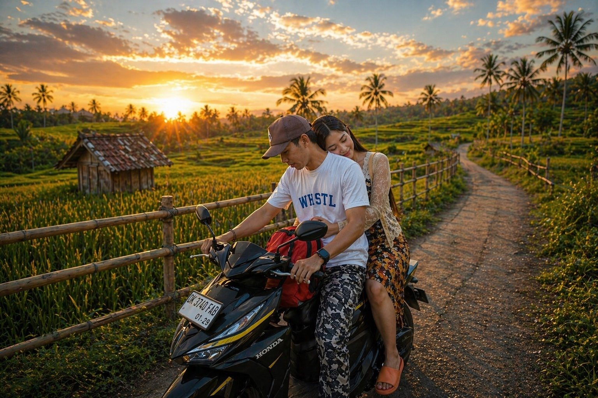
Pekerja informal yang telah mandiri lebih dari 20 tahun. Anti hutang seumur hidup, anti riba, dan selalu mencari keberkahan dalam setiap langkah kehidupan.
Tinggal di Villa Ciracas bersama nyokap tercinta berusia 76 tahun. Setiap pagi ditemani kicauan kutilang, bunglon berburu belalang, dan secangkir Top Kopi Gula Aren.
Autodidak di berbagai bidang — otomotif, teknologi, pertanian, peternakan, hingga bangunan. Prinsip hidup: efisien, fungsional, berkah. Filosofi gadget: "Gunakan sampai benar-benar mati."
Pernah melunasi hutang 150 juta almarhum adik tanpa berhutang sepeser pun. Bukan keberuntungan — itu buah dari keikhlasan dan tawakkal kepada Allah.
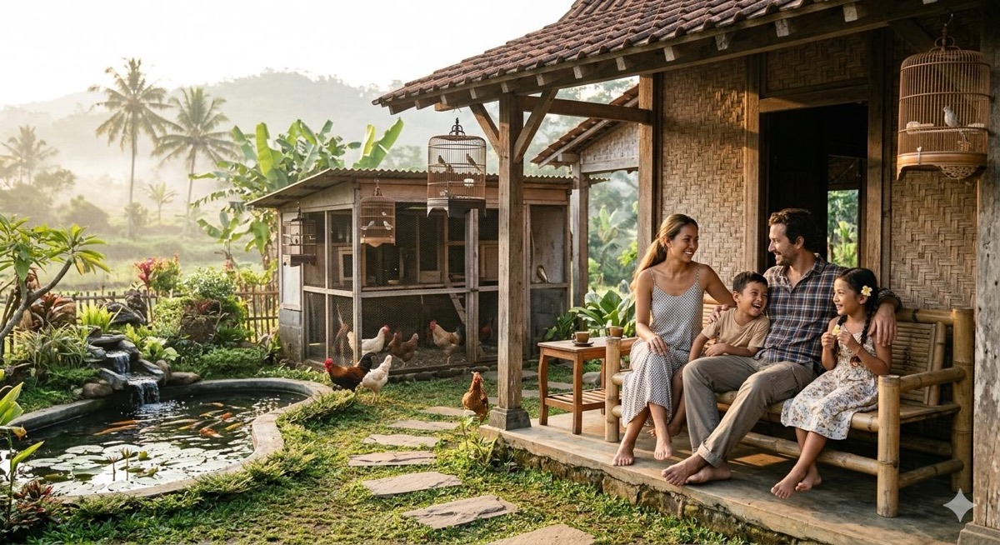
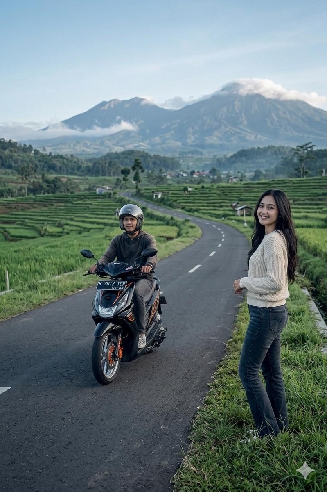
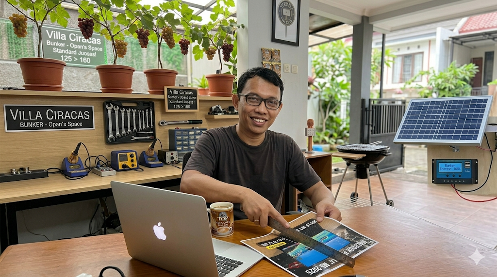
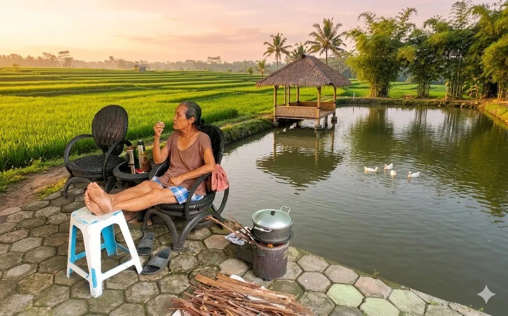
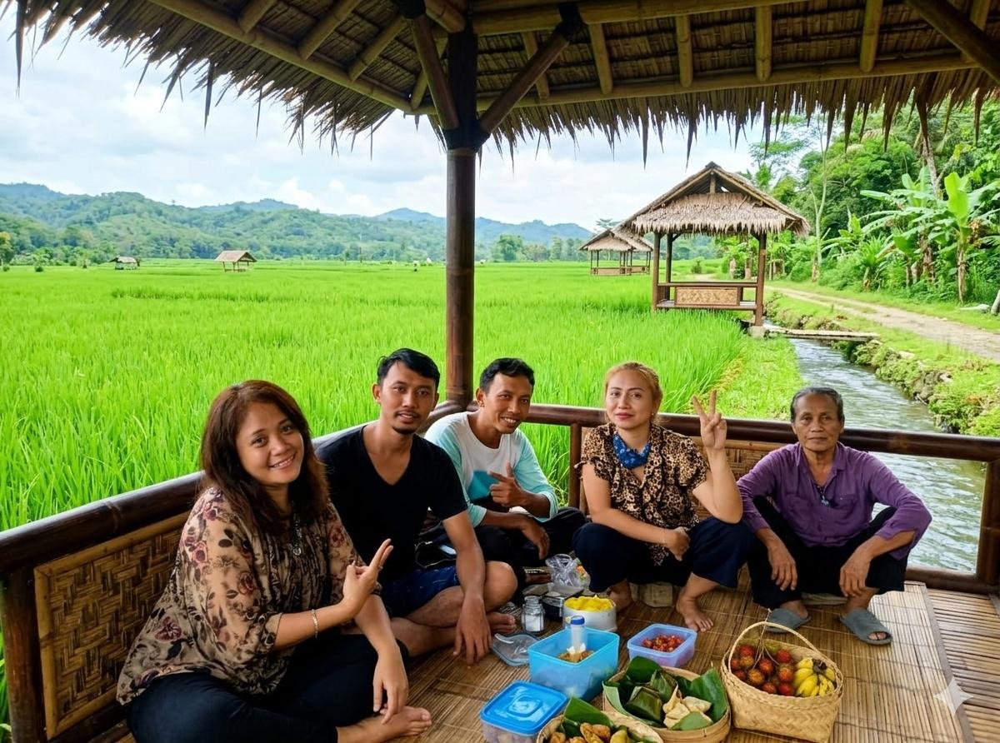
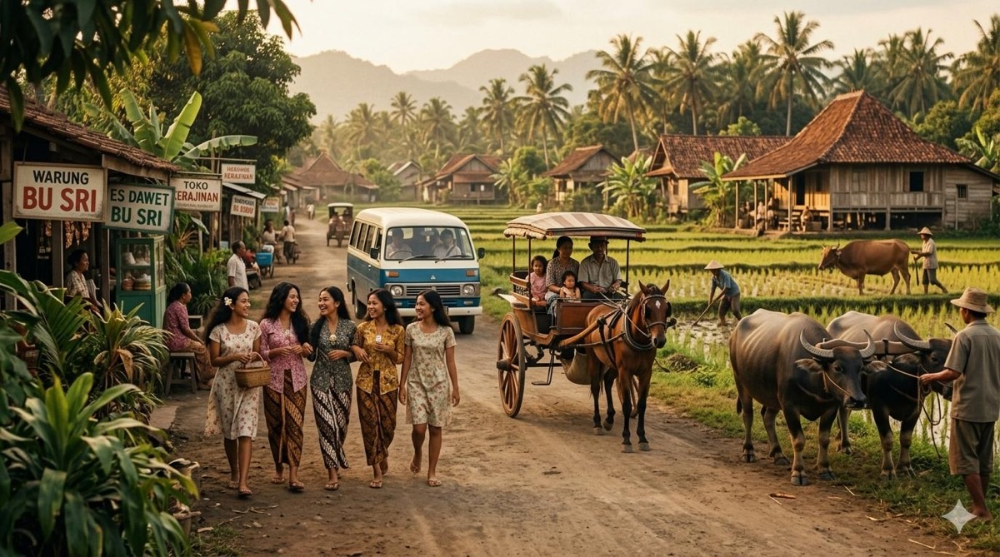
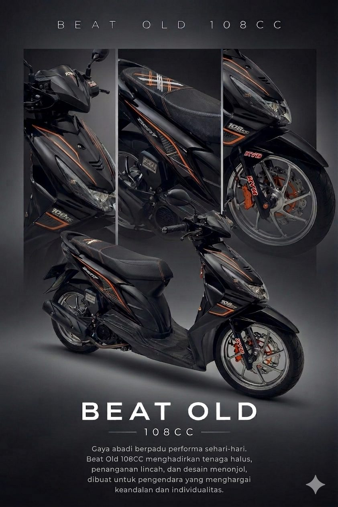
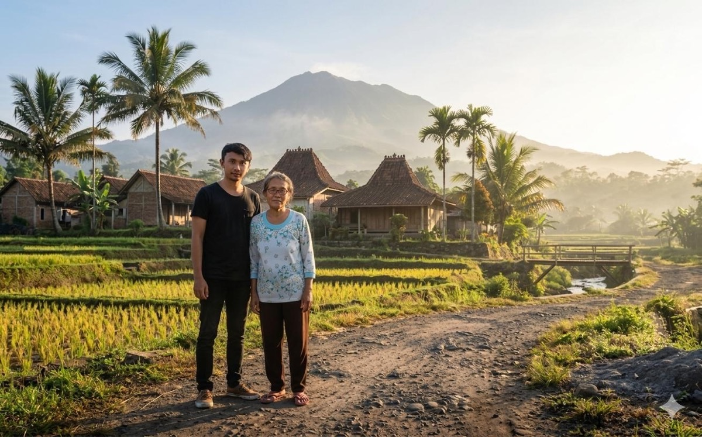
2 ayam betina broiler + 2 puyuh jantan. Sistem deep litter kandang — kotoran terurai sendiri. Telur rutin dibagikan ke tetangga & sodara.
Anggur Heliodor, Tamaki, Moondrop — umur 2 bulan sudah 2 meter! Jambu air citra, delima, kedondong mini, sayuran & apotek hidup.
Kelinci 1 ekor. Air lindi + kotoran kelinci jadi pupuk alami. Ekosistem self-sustaining yang seimbang & berkelanjutan.
Kompresor Izumi 24L, las 450W, 97 item tools & sparepart terdaftar. Servis 3 motor sendiri — CVT, rem, shock, karbu, injeksi, elektronik. Full DIY master!
WiFi 24 jam gratis, karaoke, gitar akustik (string & nylon), organ, Mac & tablet siap. Motor belasan bisa parkir. Semua orang betah & betah nginep!
Terpilih se-RT untuk lomba rumah sehat se-Kecamatan Ciracas! Konblok hexagon — nyaman, bersih, produktif & penuh berkah.
Sederhana tapi fungsional. Setiap gadget dipilih dengan riset mendalam, dirawat dengan sepenuh hati. "Till death do us part!"
Berusia 76 tahun, masih aktif memasak setiap hari dengan penuh semangat dan cinta. Masakannya adalah perekat keluarga yang tak tergantikan oleh restoran manapun.
Bumbu kacang siomay diulek manual — bukan diblender. Karena di setiap ulekan ada doa dan kasih sayang yang ikut tertuang untuk keluarga.
Semua hasil kebun — sayuran, buah, telur ayam — lebih sering dibagikan ke tetangga & sodara daripada dijual. Itulah sedekah yang paling berkah.
150m² tempat tinggal utama. Villa Ciracas — Bunker Opan's Space.
Renovasi 80%. Passive income Rp3jt/bulan. Investasi masa depan.
Aset properti di kota Bandung. Dikelola dengan bijak & amanah.
Kebun 1400m² + Sawah 700m² di Bandung. Ketahanan pangan mandiri.
Semua yang ada sekarang bukan jatuh dari langit. Ada perjalanan panjang di baliknya — ditempa langsung oleh kehidupan, bukan dari buku atau seminar motivasi.
Sejak semester 3 kuliah sudah bekerja — bukan karena gaya, tapi karena memang harus. Dua tahun sebelum lulus, bokap divonis kanker getah bening. Pendapatan keluarga tidak lagi bisa diandalkan sepenuhnya. Tanpa mengeluh, tanpa berhenti kuliah — tetap jalan, tetap lulus.
Ketika bokap berpulang, usianya baru 23 tahun. Dalam semalam, semua tanggung jawab keluarga berpindah ke satu pundak. Tidak ada upacara serah terima, tidak ada persiapan — langsung dijalani dengan ikhlas dan tawakkal. Al-Fatihah untuk Bokap. 🤲
Mengantarkan adik yang pecah ketuban di jalan malam menggunakan GL Pro Neotech 96 — panik, tapi tetap fokus. Dua kali menemani adik melahirkan di klinik berbeda. Membersihkan ari-ari bayi yang baru lahir dengan tangan sendiri.
Menjadi wali nikah adik ketika tidak ada lagi sosok bokap. Mengantar jemput 3-4 anak sekolah setiap hari — bukan anak kandung, tapi diperlakukan seperti itu. Itulah bentuk cinta yang tidak butuh gelar.
Ketika adik bungsu, Alm. Bayu, berpulang — ada amanah yang ditinggalkan. Tanpa ragu, tanpa hutang sepeser pun, semua diselesaikan dari keringat sendiri. Karena begitulah cara menghormati seorang adik yang dicintai. Al-Fatihah untuk Alm. Bayu. 🤲
Aset yang ada sekarang bukan jatuh dari langit — dibangun pelan-pelan, dijaga susah payah, dipertahankan dari banyak godaan. Termasuk merawat nyokap yang kini sudah sepuh. Karena menjaga jauh lebih sulit dari membangun. Dan itu dijalani setiap hari, dengan ikhlas, tanpa banyak bicara.
Di usia yang kata orang sudah harusnya punya ini itu — memilih jalan yang berbeda. Bukan karena tidak mampu, tapi karena paham bahwa ketenangan hati lebih berharga dari validasi siapapun. Yang nyinyir silakan — kafilah tetap berlalu.
"Cari berkah hidup aja — biar tenang dan damai."
— Om Opan, 2026
"Tekanan hidup berbanding lurus dengan gaya hidup. Makin besar gaya hidup, makin besar tekanannya."
"Keinginan dikalahkan kebutuhan. Makin banyak riset, makin males upgrade."
"Anti hutang & riba seumur hidup. Mencari keberkahan — bukan sekadar kekayaan."
"Yang penting hati tenang & happy. Lihat ke bawah, jangan sering lihat ke atas."
"Sedekah terbaik adalah dari hasil keringat sendiri. Panen dibagi — bukan untuk dijual."
"Dibalik setiap kesulitan, pasti ada kemudahan. Ikhlas adalah kunci dari setiap ujian."
Jangkauan profil meledak +9.622%, 99.8% penonton non-pengikut, dan pengunjung dari Luleå, Swedia — lebih dari 10.000 km dari Ciracas.
Baca selengkapnya →51 file revisi, 3 AI, 29 pengunjung dari 4 benua — dan sebatang pohon pisang yang ditebang di hari yang sama. Catatan teknis yang emosional.
Baca selengkapnya →Dari akun personal jadi Bunker Opanowski — satu nama di 5 platform, baca data Facebook kayak baca kartu motor, plus tips produktivitas dari MacBook Pro 2015.
Baca selengkapnya →Sebelum ada Instagram, sebelum ada TikTok — ada blog WordPress sederhana bernama Opanowski. Ditulis iseng, tapi ternyata menyimpan benih-benih filosofi yang tumbuh hingga hari ini.
Semuanya bermula dari bawang merah sisa masak yang dibuang ke samping rumah. Beberapa hari kemudian — tumbuh subur. Sejak itu muncul pertanyaan kecil: "Apa aku mewarisi tangan dingin nyokap dalam bercocok tanam?"
Tanpa pikir panjang, telepon nyokap di Bandung — minta disiapkan bibit bayam, kangkung, selada, sawi, cabai, tomat. Beberapa bulan kemudian: panen besar. Bingung mau diapakan, dibagi ke saudara dan tetangga. Sebagian dibawa ke Bandung untuk nyokap — dari Jakarta malah bawa sayuran. 😄
Lima belas tahun kemudian, iseng itu berkembang menjadi kebun anggur Heliodor & Tamaki, aviary ayam & puyuh, kelinci, dan juara lomba rumah sehat se-Kecamatan Ciracas. Benih kecil yang ditanam dengan ikhlas — tumbuh menjadi filosofi hidup.
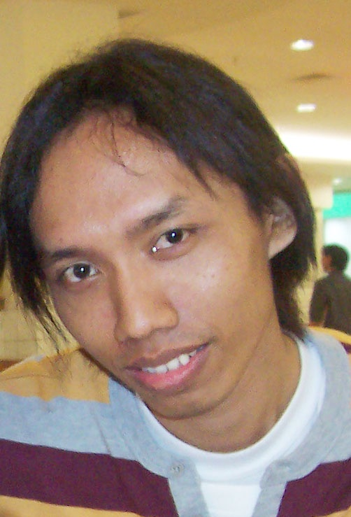
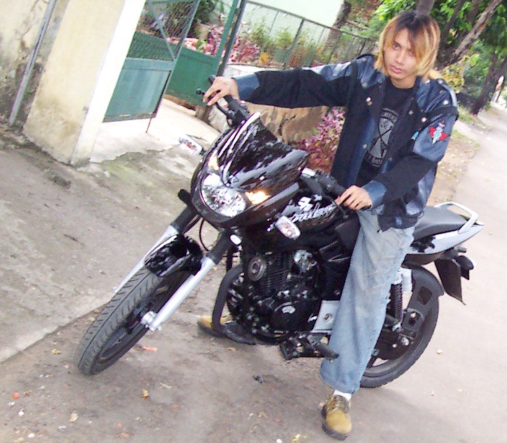
Maret 2007 — setelah survei sana-sini dengan budget pas-pasan plus sedikit nekat, pilihan jatuh pada Bajaj Pulsar. Tampilan oke, teknologi oke, kencang — worth it. Motor laki pertama yang benar-benar memenuhi standar.
Yang ada di foto ini adalah Alm. Bayu — adik bungsu yang begitu mencintai motornya. Sosok yang pergi terlalu cepat, meninggalkan kenangan yang tak pernah pudar.
Ketika Alm. Bayu berpulang, ada amanah yang ditinggalkan. Tanpa ragu, tanpa hutang sepeser pun — semua diselesaikan dengan keringat sendiri, dengan ikhlas, dengan tawakkal. Karena itulah caranya menghormati seorang adik.
Al-Fatihah untuk Alm. Bayu — si bungsu yang selalu ada di hati. Semoga tenang di sisi-Nya. 🤲
"Benih yang ditanam dengan ikhlas, tumbuh menjadi pohon yang menaungi orang banyak."
Catatan dari Blog Lama · opanowski.wordpress.com · 2007—2011
Cerita sehari-hari Bunker Opanowski · Powered by AI · Available on Spotify
Dengarkan juga di Spotify ↗
Cerita, filosofi & kehidupan sehari-hari dari Villa Ciracas · Available on YouTube
Tonton lebih banyak di YouTube Bunker Opanowski ↗
👤 Profil Kreator
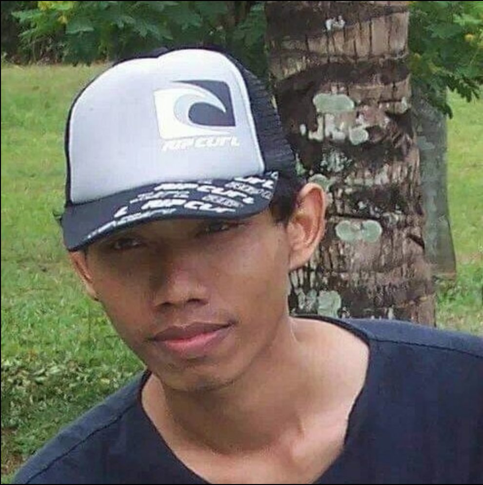
Autodidak · Ciracas, Jakarta Timur. Teknisi motor, urban farmer, dan lifelong learner. Prinsip hidup: efisien, fungsional, berkah. Filosofi: ketahanan pangan mandiri dari halaman sendiri.
3 catatan terbaru dari Log Harian — langsung dari bengkel digital Villa Ciracas.
"Diupdate berkala — bukan karena FOMO, tapi karena memang ada yang perlu dicatat."
Secangkir Top Kopi Gula Aren, subuh di Villa Ciracas, dan seledri organik yang tumbuh diam-diam. Kenapa menanam itu obat paling murah buat kepala yang pusing.
Baca →Dari akun personal jadi Bunker Opanowski yang utuh — satu nama di 5 platform, baca data Facebook kayak baca kartu motor.
Baca →LocalSend kirim 80MB video kebun dalam sekejap, TikTok seragam jadi @opanowski, Facebook Pro nunjukin kenaikan tayangan 5.524%.
Baca →"Diupdate berkala — bukan karena FOMO, tapi karena memang ada yang perlu dicatat."